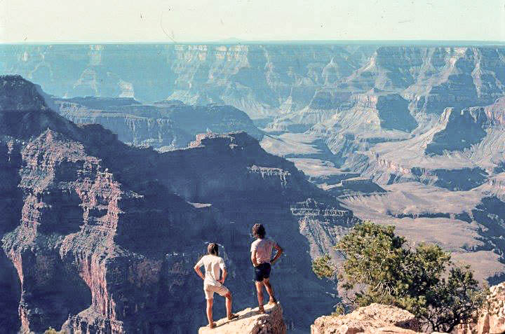

THE AUTHOR [LEFT] AT POINT SUBLIME ON THE NORTH RIM OF THE GRAND CANYON OF THE COLORADO RIVER IN 1979.
The Seven Laws of the Great View — ©1995 Robert S. Turner
(1) The great view is always a ground-based view.
(2) The great view is enhanced by the method and path used to approach the view.
(3) The great view is enhanced by direct experience with geographical details within the expanse of the view.
(4) The great view is enhanced by knowing historical details about places within the expanse of the view.
(5) The great view is enhanced by geological knowledge, both structural and temporal, of the landscape within the expanse of the view.
(6) An ensemble of great views within sight of one another will enhance each great view.
(7) The great view both diminishes and expands the viewer's sense of self.